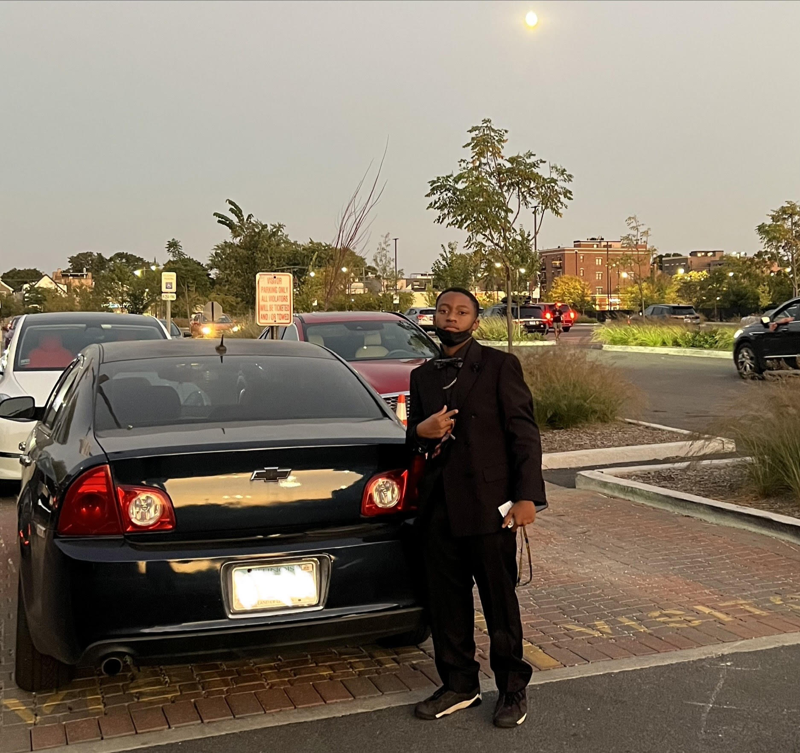

Currently a freshman at Lane Technical High School, I am navigating my first year as part of the Class of 2029. Turning 15 this past November has brought a new sense of perspective as I dive into the rigorous academic environment that Lane Tech is known for. Being a "Champion" means balancing a demanding workload with the vibrant culture of one of Chicago’s most historic schools, and I am focused on making my mark here over the next four years.
Music plays a central role in my daily life, specifically the raw storytelling found in Rap and Hip-Hop. I find myself constantly inspired by the lyricism and beats of artists like Drake, Lil Durk, Lil Baby, and Polo G. Their music isn’t just a background track for me; it’s a source of motivation. Whether I’m commuting to school or locked into a study session, their tracks provide the energy and rhythm I need to stay focused and driven.
At home, I occupy a unique position as the youngest of three children. With a 22-year-old brother and a 24-year-old sister both currently navigating their own paths through college, I have the advantage of seeing the future through their experiences. Being the youngest has taught me a lot about observation and ambition; watching my siblings pursue their degrees pushes me to set high standards for my own academic journey.
“Do what you can, with what you have, where you are.”